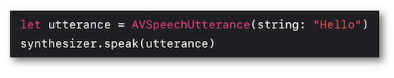
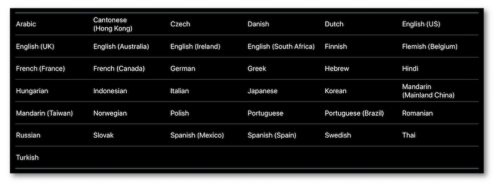
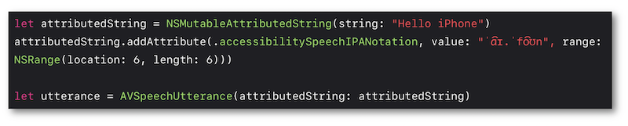

WWDC 2018 : Utiliser une voix synthétisée avec AVSpeechSynthesizer
Cette présentation visualisable sur le site développeur officiel d'Apple (session 236) a pour but de mettre en avant les éléments essentiels qui permettent à une application iOS d'utiliser une voix synthétisée en s'appuyant sur AVSpeechSynthesizer.

Les thèmes abordés ainsi que leur référence temporelle au sein de la vidéo sont décrits ci-dessous :
-
Cas d'usage (00:48)
-
Par où commencer ? (02:03)
-
AVSpeechSynthesizerDelegate (03:20)
-
Démonstration (04:11)
-
Choix de la voix synthétisée (04:31)
-
Débit vocal (05:32)
-
Hauteur tonale et volume (06:15)
-
Phonétique (06:54)
Par la suite, le fait de cliquer sur un titre permet d'ouvrir la vidéo de présentation Apple directement au moment indiqué.
Cas d'usage (00:48) #
Les différentes utilisations possibles de cette fonctionnalité sont décrites dans cette partie.
Par où commencer ? (02:03) #
Pour utiliser une voix synthétisée, il est primordial de créer tout d'abord une instance AVSpeechSynthesizer en s'assurant de son existence programmatique jusqu'à la fin de la vocalisation souhaitée.

Il faut ensuite décrire sous forme de texte ce qui doit être vocalisé et fournir le résultat obtenu à l'instance précédente.

Dans ce cas, une session AVAUdioSession est automatiquement activée et peut être utilisée conjointement avec la vocalisation créée.

Cette session devra être explicitement désactivée à la disparition de l'instance AVSpeechSynthesizer.
AVSpeechSynthesizerDelegate (03:20) #
Ce protocole comprend un ensemble de méthodes optionnelles permettant de gérer certains événements du synthétiseur vocal :
-
pauses et reprises,
-
débuts et fins des vocalisations
AVSpeechUtterance, -
position de l'élément vocalisé au sein du texte auquel il appartient.

Démonstration (04:11) #
Exemple très simple d'une vocalisation synthétisée s'appuyant sur les méthodes du protocole AVSpeechSynthesizerDelegate.

Choix de la voix synthétisée (04:31) #
La voix synthétisée par défaut est celle du langage défini dans les préférences du terminal.

Il est toutefois possible de définir cette dernière en spécifiant le langage désiré ou en utilisant un identifiant propre à une voix téléchargée.

Débit vocal (05:32) #
La vitesse du débit vocal peut être modifiée avec des coefficients multiplicateurs plus ou moins importants selon la valeur programmatique implémentée.

Hauteur tonale et volume (06:15) #
Ces deux propriétés vocales sont facilement personnalisables en notant bien que l'augmentation du volume de la voix ne modifie absolument pas le volume système.

Phonétique (06:54) #
La prononciation de certains mots pouvant parfois prêter à confusion, il est très pratique d'utiliser la phonétique pour s'assurer de la vocalisation appropriée.
Côté développement, on s'appuie sur les Attributed Strings pour utiliser l'alphabet phonétique international (IPA), ces éléments pouvant aussi servir à spécifier une langue différente uniquement pour une partie de la phrase à vocaliser par exemple.
